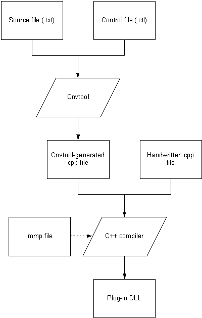

|
| |
The following steps are involved in the process of creating a plug-in DLL. Each step is described in more detail in following sections.
Create the source file. This is a text file that contains pairs of hexadecimal numbers. The first number in each pair is the encoding of a character in the foreign character set, and the second is the Unicode encoding of the same character.
Create the control file. This is a text file that specifies the conversion algorithms to convert both ways between ranges of characters, and other information.
Invoke cnvtool on the source and control files. This
generates a cpp file referred to as the cnvtool-generated cpp
file.
Create a cpp file which implements the plug-in DLL interface
(defined in convplug.h) using the global objects created in the
cnvtool-generated cpp file, if necessary.
Create an mmp file which is used to build the plug-in
DLL. Specify
\epoc32\release\build variant\convplug.def as the filename in the deffile statement.
Build the plug-in DLL and install it into the
\system\charconv\ directory.
The DLL is then available to be loaded by
CCnvCharacterSetConverter::PrepareToConvertToOrFromL().
The process is summarised by the following diagram:

|
The source file is a text file which contains a table of mappings
between Unicode and the foreign character set. The table consists of two
tab-separated columns. The first column lists the foreign character code. The
second lists the corresponding Unicode character code. Both codes are in
hexadecimal. The table can contain further hex columns if the
-columns command line flag is used, (see the Running cnvtool
section, below). Another column is optional — it contains the
Unicode name following a comment sign "#", provided to make the file more
readable.
In some cases, the foreign character codes that appear in the source file need to be processed in some way before being used in the binary output file. Specifying how they should be processed is done by including a line in the following format in the source file:
SET_FOREIGN_CHARACTER_CODE_PROCESSING_CODE [Perl code]
This affects all lines in the source file beneath it until the next
such line. If SET_FOREIGN_CHARACTER_CODE_PROCESSING_CODE is
followed by whitespace only, the foreign character codes in the subsequent
lines are not processed.
The Perl code must return a number using the variable
$foreignCharacterCode as its input parameter. For example, if the
high bit of each foreign character is off in the source file but is required to
be on in the output file, the Perl code (assuming the foreign character set
uses only one byte for each character) would be:
return $foreignCharacterCode|0x80;
|
The control file is a text file which specifies the conversion algorithms to convert (both ways) between ranges of characters, and other information. It also specifies the code(s) of the character(s) to use to replace unconvertible Unicode characters, the endian-ness of the foreign character set (if single characters may be encoded by more than one byte) and the preferred character to use when a character has multiple equivalents in the target character set.
The control file (like the source file) is case insensitive and permits comments beginning with a "#" and extending to the end of the line. It also permits blank lines and leading and trailing whitespace on non-blank lines.
There are four sections in the control file: the header, the foreign variable-byte data, the foreign-to-Unicode data and the Unicode-to-foreign data.
The header consists of two lines in fixed order. Their format is
as follows (alternatives are separated by a |, single space
characters represent single or multiple whitespace characters):
Endianness Unspecified|FixedLittleEndian|FixedBigEndian
ReplacementForUnconvertibleUnicodeCharacters <see-below>
The value of Endianness is only an issue for foreign
character sets where single characters may be encoded by more than one byte.
The value of ReplacementForUnconvertibleUnicodeCharacters is a
series of one or more hexadecimal numbers (not greater than 0xff) separated by
whitespace, each prefixed with 0x. These byte values are output for each
Unicode character that has no equivalent in the foreign character set (when
converting from Unicode to foreign).
This section is contained within the following lines:
StartForeignVariableByteData
EndForeignVariableByteData
In between these lines are one or more lines, each consisting of
two hexadecimal numbers (each prefixed with 0x and not greater than 0xff),
followed by a decimal number. All three numbers are separated by whitespace.
Each of these lines indicates how many bytes make up a foreign character code
for a given range of values for the initial foreign byte. The two hexadecimal
numbers are the start and end of the range of values for the initial foreign
byte (inclusive), and the decimal number is the number of subsequent bytes. The
way these bytes are put together to make the foreign character code is
determined by the value of Endianness in the header of the control
file. For example, if the foreign character set uses only a single byte per
character and its first character has code 0x07 and its last character has code
0xe6, the foreign variable-byte data would be:
StartForeignVariableByteData
0x07 0xe6 0
EndForeignVariableByteData
This section is contained within the following lines:
StartForeignToUnicodeData
EndForeignToUnicodeData
In between these two lines are one or more of lines in format A (defined below). These may be optionally followed by one or more of lines in format B (defined below), in which case the lines in format A and format B are separated by the line:
ConflictResolution
Each line in format A indicates the conversion algorithm to be used for a particular range of foreign character codes. Lines in format A contain the following fields, each separated by whitespace:
first field (reserved for future use — should be set to zero),
second field (reserved for future use — should be set to zero),
first input character code in the range — a hexadecimal number prefixed with 0x,
last input character code in the range — a hexadecimal number prefixed with 0x,
algorithm — one of Direct |
Offset | IndexedTable16 |
KeyedTable1616, as described below,
parameters — (not applicable to any of the
current choice of algorithms) — set this to
{}
There are four possible conversion algorithms:
Direct — this is where each character in the
range has the same encoding in Unicode as in the foreign character set,
Offset — this is where the offset from the
foreign encoding to the Unicode encoding is the same for each character in the
range,
Indexed table (16) — this is where a contiguous
block of foreign character codes maps onto a random collection of Unicode
character codes (the 16 refers to the fact that each Unicode character code
must use no more than 16 bits),
Keyed table (16-16) — this is where a sparse
collection of foreign character codes map onto a random collection of Unicode
character codes (the 16 refers to the fact that each foreign character code and
each Unicode character code must use no more than 16 bits).
Lines in format B, if present, consist of two hexadecimal numbers, prefixed with 0x, separated by whitespace. The first of these is a foreign character code which has multiple equivalents in Unicode (according to the data in the source file), and the second is the code of the preferred Unicode character to which the foreign character should be converted.
This section is structured similarly to the foreign-to-Unicode data section. It is contained within the following lines:
StartUnicodeToForeignData
EndUnicodeToForeignData
In between these two lines are one or more lines in format C (defined below). These may be optionally followed by one or more of lines in format D (defined below), in which case the lines in format C and format D are separated by the line:
ConflictResolution
Format C is very similar to format A with one exception, which is an additional field to specify the size of the output character code in bytes (as this is a foreign character code). Each line in format C indicates the conversion algorithm to be used for a particular range of Unicode character codes. Lines in format C contains the following fields, each separated by whitespace:
first field (reserved for future use — should be set to zero),
second field (reserved for future use — should be set to zero),
first input character code in the range — a hexadecimal number prefixed with 0x,
last input character code in the range — a hexadecimal number prefixed with 0x,
algorithm — one of Direct |
Offset | IndexedTable16 |
KeyedTable1616,
size of the output character code in bytes (not present in format A) — a decimal number,
parameters - (not applicable to any of the current choice of
algorithms) — set this to {}
Format D is analogous to format B (described above). Like format B, it consists of two hexadecimal numbers prefixed with 0x, separated by whitespace. However, the first of these is a Unicode character code which has multiple equivalents in the foreign character set (according to the data in the source file), and the second is the code of the preferred foreign character to which the Unicode character should be converted.
It is sometimes desirable for further objects to be generated
which provide a view of a subset of the main SCnvConversionData
object. This is possible by inserting an extra pair of lines of the following
form in both the foreign-to-Unicode data and the Unicode-to-foreign data
sections in the control file:
StartAdditionalSubsetTable <name-of-SCnvConversionData-object>
EndAdditionalSubsetTable <name-of-SCnvConversionData-object>
These lines should be placed around the block of lines to be
included in the named SCnvConversionData object. Note that only
one pair of these lines can occur in each of the foreign-to-Unicode data and
the Unicode-to-foreign data sections, and if a pair occurs in one, it must also
occur in the other. Accessing one of these SCnvConversionData
objects from handwritten C++ files is done by putting a line of the following
form at the top of the relevant C++ file.
GLREF_D const SCnvConversionData <name-of-SCnvConversionData-object>;
The named object can then be used as required.
Using this technique means that two (or more) foreign character sets — where one is a subset of the other(s) — can share the same conversion data. This conversion data would need to be in a shared-library DLL which the two (or more) plug-in DLLs would both link to.
Of the four conversion algorithms listed above, the keyed table is the most general and can be used for any foreign character set. However, it is the algorithm requiring the most storage space, as well as being the slowest (a binary search is required), therefore it is best avoided if possible. The indexed table also requires storage space (although less than the keyed table), but is much faster. The direct and offset algorithms are the fastest and require negligible storage. It is thus necessary to choose appropriate algorithms to minimize storage and to maximize speed of conversion.
Ranges of characters in the control file are permitted to overlap. This is useful as it means that a keyed table whose range is the entire range of the foreign character set (or the Unicode character set) can be used at the end of the foreign-to-Unicode data (or Unicode-to-foreign data) to “catch” all the characters that were not “caught” by the preceding ranges, which will have used better algorithms.
|
cnvtoolInvoke cnvtool on the source and control files to
generate a cpp file that implements the
interface defined by convgeneratedcpp.h. For information on the syntax for invoking cnvtool, see cnvtool command syntax.
|
The plug-in DLL interface is defined in convplug.h. The cpp file
which implements this interface should #include
convgeneratedcpp.h so that it can access the two (const) global
objects implemented in the cnvtool-generated cpp file. The
SCnvConversionData object is useful for implementing the second
and third functions of the plug-in DLL interface
(ConvertFromUnicode() and ConvertToUnicode()). This
is because the CCnvCharacterSetConverter class provides some
static functions taking SCnvConversionData parameters
(DoConvertFromUnicode() and DoConvertToUnicode()).
These utility functions make the implementation of the second and third
functions of the plug-in interface trivial for non-complex character sets.
All eleven functions prototyped in convplug.h need to be implemented by the plug-in DLL. The implementations of the reserved functions should do nothing, i.e. have empty function bodies.
The implementations of ConvertFromUnicode() and
ConvertToUnicode() must fulfil the following behavioural
requirements. They must return either a negative error code (see
CCnvCharacterSetConverter::TError), or the number of elements at
the end of the input descriptor which have not been converted, either because
the output descriptor is full, or because there is a truncated sequence at the
end of the input descriptor, e.g. only the first half of a Unicode surrogate
pair, or only the first byte of a multi-byte foreign character set character
code, or a truncated escape sequence of a modal foreign character set. The
functions should be able to cope with the situation where the output descriptor
is too short or if there is a truncated sequence at the end of the input
descriptor, without returning an error, although if the input descriptor
consists purely of a truncated sequence, they should return
CCnvCharacterSetConverter::EErrorIllFormedInput.
The CnvUtilities class provides some other utility
functions which are of use for more complex foreign character sets, for
instance modal character sets. Modal character sets are those where the
interpretation of a given byte of data is dependent on the current mode, mode
changing being performed by certain defined escape sequences which occur in the
byte stream.
|
The mmp file used to build the plug-in DLL should specify the
targetpath, targettype, uid and
deffile keywords as follows:
targetpath \system\charconv
targettype dll
uid 0x1000601a 0x<UID-in-hexadecimal>
#if defined(WINS)
deffile \epoc32\release\wins\CONVPLUG.DEF
#elif defined(MARM)
deffile \epoc32\release\marm\CONVPLUG.DEF
#else
error
#endif
The second of the two UIDs (Universal Identifiers) specified in the .mmp file must be a unique number allocated by Symbian specifically for the required foreign character set. It should be requested in the normal way for EPOC UIDs (by email to the Symbian Developer Network). The first UID should always have the value 0x1000601a.
Copyright ©2002 Symbian Ltd. 6.1-00174 |
|